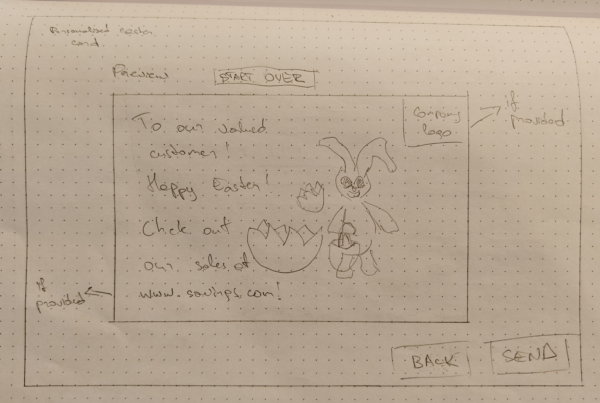

Animated Easter Card Creator
A multi-page "Wizard" application for businesses to create and send personalised animated Easter cards in bulk, utilizing client-side file parsing and URL-based personalisation.
- HTML5 & Semantic Markup
- CSS3 (Modular Theme Animations)
- JavaScript (ES6+, FileReader, Regex)
- EmailJS API (Automatic Bulk Sending)
- SheetJS (XLSX Parsing)
Overview
The Animated Easter Card Creator is a web tool for small businesses to send personalised animated cards to their customers. The project is split into two main parts: a "Wizard" that helps businesses upload their customer list and brand the card, and a decoupled animated card (card.html) that now supports multiple themes like the playful "Easter Bunny" or the elegant "Spring Garden." Personalisation works by adding customer details to the card's web address, and the tool uses the EmailJS API to send these links to hundreds of customers automatically in one go.

The Problem
Small businesses often find professional marketing tools too expensive or complicated. Most services require a monthly subscription or a developer to set everything up. The challenge was to create a free, private tool that could handle large lists of customers, show a live preview of the card, and send everything out reliably - all while keeping a high-quality look and feel.
Requirements Gathering
Requirements were based on the needs of a typical small business and the project brief. A key technical requirement was the ability to read different types of files. This led to using the SheetJS library so the tool could handle Excel files as well as standard CSV and JSON lists. The personalisation needed to work without a server, which was solved by passing details through the web address (URL parameters).
Functional Requirements
- Upload customer lists using CSV, JSON, or Excel files.
- Manual entry option for adding customers one by one.
- Add company branding, including a name, website, and logo.
- Match columns from the uploaded file and see live data examples.
- Write custom opening phrases or choose from preset templates.
- Reorder the message blocks (phrase, main text, company name) on the card.
- Bulk sending using the user's local email client.
Non-functional Requirements
- Privacy: All file reading happens on the user's computer; data is never sent to a server.
- Organisation: A clear, step-by-step "Wizard" flow to keep the process simple.
- Performance: Using smooth CSS animations that work well on all devices without needing heavy libraries.
Design
Visual Layering & Animation
The animation in card.html uses simple layering to create a 3D effect. The bunny is placed behind a "ground" layer, which hides its lower body as it "climbs" out of the earth. This makes the animation look more polished without using complex code. The egg cracking effect uses several small pieces and a bright flash to make the moment feel energetic and surprising.
Wizard Workflow
The creator tool uses a simple, linear flow to prevent mistakes:
- Details: Enter company info and upload the customer list.
- Personalise: Match the data columns and pick a message.
- Preview: Watch the actual card as a recipient would see it.
- Send: Send out all the personalised links with progress tracking.
The Solution
Bulk Sending with EmailJS
The project uses the EmailJS API, which allows the tool to send out many personalised HTML emails automatically and reliably directly from the browser. This turned the project from a simple prototype into a professional business utility that can handle large lists of customers in one go.
Modular Theme Engine
The card now supports multiple animation styles. By splitting the code into modular CSS files (like card-bunny.css and card-garden.css), the tool only loads the styles for the chosen theme. This makes the project easy to expand with even more animations in the future.
Accessibility & Polish
The tool uses "Gold Standard" accessibility features. Form errors are explained clearly to screen readers using aria-invalid, and a "Skip Animation" button was added so users can instantly verify their personalisation during the preview step.
Development Process / Testing
The animated card was built first to ensure the recipient's experience was perfect. After that, the administrative tools were added. Testing focused on three areas:
- Data: Implementing a robust regex-based parser to handle complex CSV files (like names with commas) and making sure all personalisation data stayed saved across the "Wizard" steps.
- Timing: Creating a "Skip Animation" feature using negative CSS delays to jump to the end of the scene, making it much faster to test different personalisation settings.
- Accessibility: Using tools like axe DevTools and manual NVDA testing to verify that the status updates, keyboard-friendly theme cards, and error messages worked for all users.
Outcome and Reflection
The project successfully created a professional business tool that works entirely in the browser. Using EmailJS turned the project from a simple prototype into a reliable utility for bulk customer outreach.
Future versions could use the Web Animations API for even more control over the animation, such as letting the user pause or replay specific parts. This would make the experience even more interactive and engaging for the recipient.